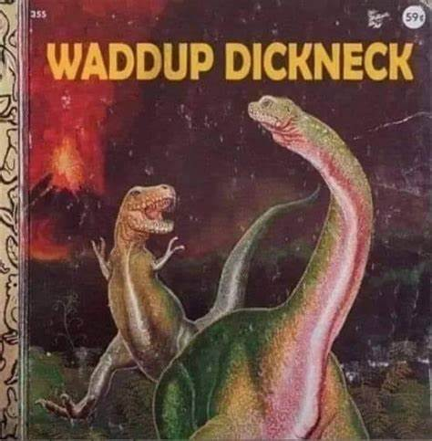

Welcome to my website!
Łukasz Holeczek
Student, (shitty)Programmer & Brofessional
Projects
Here are some of my projects...
About Me
I'm excited to begin my studies this year at the Silesian Technical University, where I'll be diving into the world of embedded systems. Beyond academics, I have a deep passion for a few key things:
- Sports: Whether it's hitting the gym, playing ping pong, or enjoying a weekend hike, I love staying active and exploring the outdoors.
- Music: Music is a huge part of my life. From attending concerts to curating playlists, I find joy and inspiration in various genres and artists.
- Technology: I'm fascinated by the ever-evolving world of technology. From coding projects to exploring the latest gadgets and software, I enjoy staying up-to-date and experimenting with new tools and innovations.

Contact
Feel free to reach out to me on...